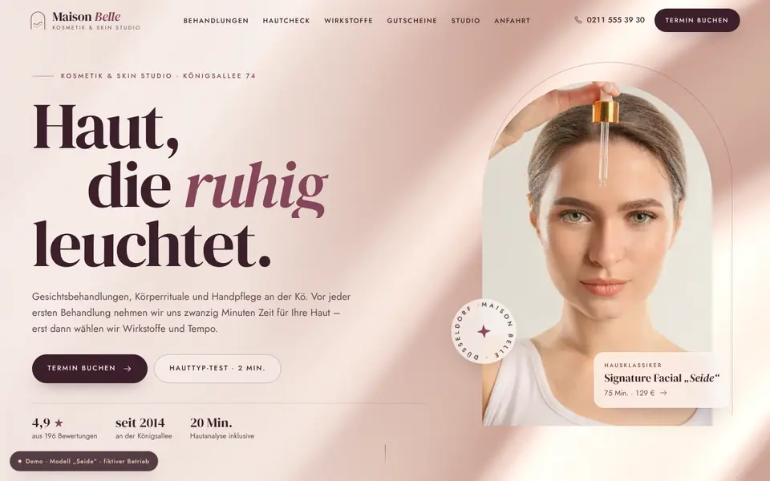
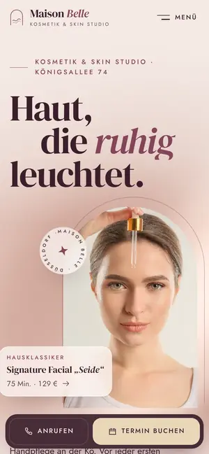

Case Study 20 / 30 · Beauty
Maison Belle – Kosmetik & Skin Studio
Modell „Seide“
Seidige Studio-Seite mit WebGL-Hero, Hauttyp-Quiz, Wirkstoff-Explorer und Gutschein-Konfigurator.


Ausgangslage
Maison Belle ist ein erfundenes Kosmetikstudio an der Königsallee in Düsseldorf mit vier Kosmetikerinnen. Wer hier landet, will das Behandlungsmenü nach Bereich, Dauer und Preis durchsehen, herausfinden, was zur eigenen Haut passt, einen Gutschein verschenken oder einen Termin anfragen. Die Seite soll Beratung vorwegnehmen, ohne wie ein Katalog zu wirken.
Idee
Luxuriös und editorial: Puder, Nude, Pflaume und Champagner, seidige Verläufe, weiche Lichtkegel und Fotos in Bogen-Masken. DM Serif Display mit Kursiv-Akzenten setzt die Überschriften, Jost übernimmt Text und Versalien-Labels; die Abschnitte sind als nummerierte „Chapitres“ aufgebaut. Im Hero wölbt sich eine WebGL-Seide weich zum Mauszeiger – ruhig statt laut, passend zu einem Studio, das Vertrauen verkaufen muss.
Was die Seite kann
- Seidenwellen-ShaderEin WebGL-Höhenfeld mit Streiflicht und Champagner-Schimmer folgt gefedert deiner Maus, pausiert außerhalb des Viewports und fällt ohne WebGL auf einen CSS-Verlauf zurück.
- Hauttyp-QuizFünf Fragen zu Hautgefühl, Reaktivität, Wunsch, Pflegezeit und Hinweisen ergeben Hauttyp, Behandlungsempfehlung mit Begründung, Wirkstoff-Tipp und Routine; ein Button füllt das Terminformular vor.
- Behandlungsmenü mit Filtern16 Karten nach Bereich, Dauer und Preis-Slider, weiche FLIP-Übergänge, Zähler mit aria-live und „Vormerken“ direkt ins Terminformular.
- Gutschein-KonfiguratorWertgutschein oder Behandlung, Für/Von, Nachricht, vier Kartenfarben und Zustellart mit Live-Vorschau, 3D-Kippen per Maus und Rückseite.
- Wirkstoff-ExplorerHyaluron, Vitamin C, Retinol und Niacinamid als magnetische Kreise mit Verbindungslinien, die zeigen, was sich kombinieren lässt.
- Le RituelDer erste Termin in vier Akten als gepinnte Querstrecke auf dem Desktop, dazu Öffnungsstatus „jetzt geöffnet“ und Wunschtag-Chips in der Terminanfrage.
Dein Betrieb
So eine Seite für dich?
Schreib mir kurz, was du anbietest und was deine Website leisten soll. Du bekommst eine ehrliche Einschätzung, was sie kostet und was sie dir bringen kann.
Projekt anfragen